Мы с вами находимся на улице имени журнала «Смена». Столь необычное название было выбрано неслучайно. Именно здесь находились первая взрослая библиотека имени журнала «Смена» и первая детская библиотека имени этого же печатного издания.
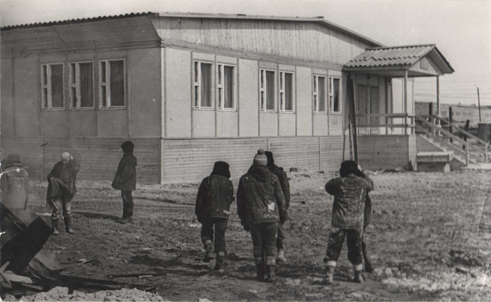
Он появился относительно недавно. Ещё в конце прошлого века на этом участке лесотундры была богатая для северного края растительность. В 1999 году в администрации города возникла идея окультурить это место, сделать его не только зоной отдыха, но и площадкой для проведения различных мероприятий. Само название парка отсылает нас ко временам основания города, построенного большим дружным многонациональным коллективом. Также оно говорит о назначении парка, созданного для укрепления тёплых товарищеских отношений между людьми.
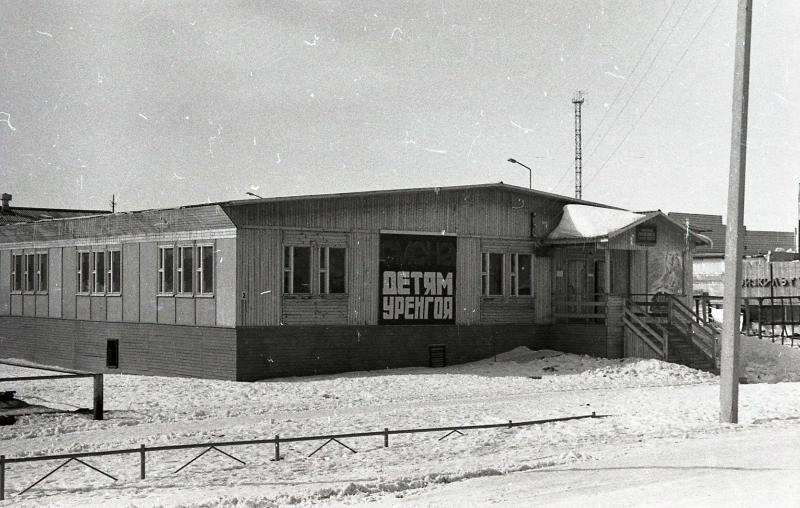
Казалось бы, что нас связывает с самым массовым молодёжным литературно-художественным журналом Советского Союза?! Да все просто. Еще в 1978-м году «Смена» взяла на себя шефство над тогда еще посёлком Новый Уренгой. Ведь, как говорится, не хлебом единым жив человек. Проблема обеспечения досуга жителей строящегося посёлка стояла остро. Телевидения в Новом Уренгое тогда не было. Имелся один крохотный клуб. Но попасть в него было крайне сложно. Чем обеспечить свободные вечера трудящихся? Книга в таких условиях была бесценна. Это сегодня для нас не составляет проблемы купить или заказать любую интересующую книгу, любого жанра, на любом языке мира и любом виде носителя (книга в переплете, в электронном виде или аудио формате). А тогда на каждую попавшую в посёлок книгу тут же возникала очередь. Её зачитывали буквально до дыр.
Для решения проблемы досуга трудящихся журнал приобрёл 800 книг, для чего была использована денежная часть ранее полученной премии Союза писателей СССР.
В 1978 году силами строителей-энтузиастов ударного отряда имени XVIII съезда ВЛКСМ ящики с книгами были доставлены в Новый Уренгой и размещены в общежитии №13 (ул. Набережная 32).
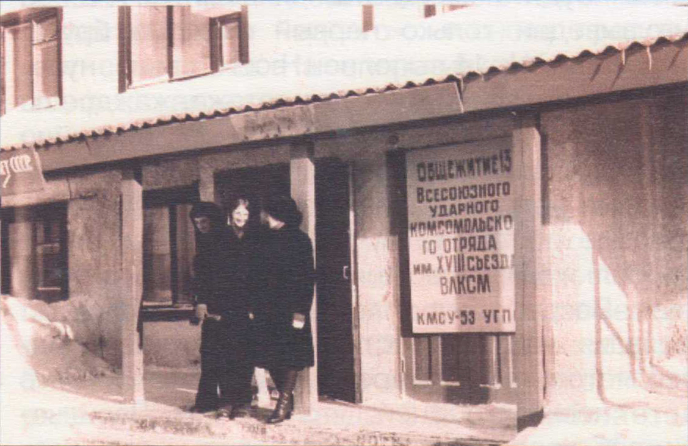
Книги, купленные журналом, оказались весьма кстати, пользовались огромным спросом у жителей. Но разве могут 800 книг решить серьёзную проблему досуга? Тогда и стало понятно, что посёлку нужна библиотека.
Однако у руководства Всесоюзной стройки на тот момент не было ни помещения, ни материалов для строительства, ни фондов для комплектования. А самое главное, не было времени. В приоритете было обустройство газового месторождения.
Для решения проблемы с помещением сотрудники «Смены» обратились к трудящимся нововятского комбината древесных плит, что в Кировской области. На базе того комбината делали дома в северном исполнении, утепленные. Удалось договориться о создании специального проекта библиотеки на базе нескольких трехквартирных домов.
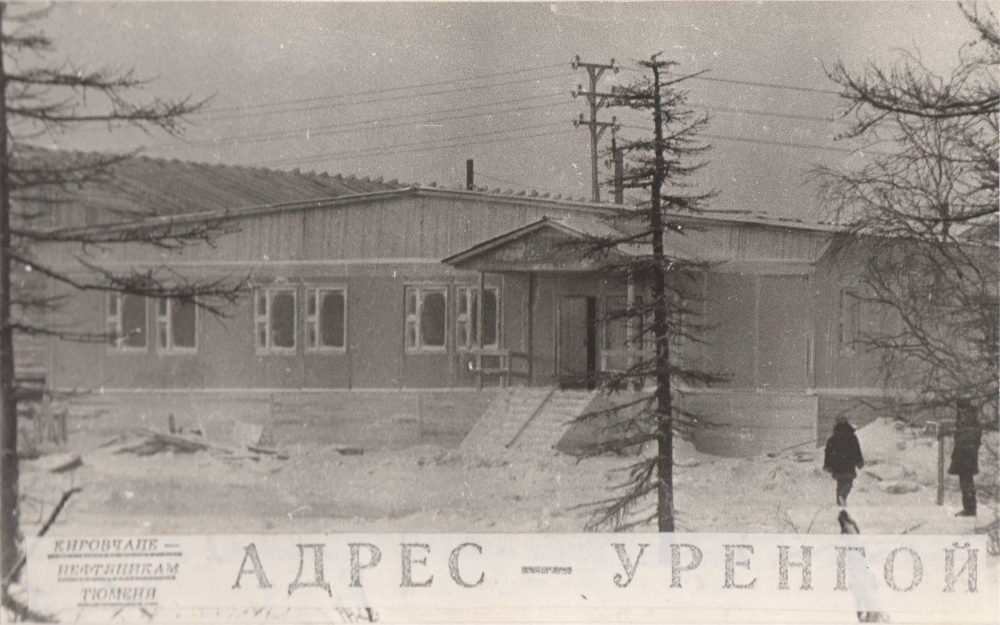
Из воспоминаний главного редактора «Смены» Альберта Лиханова : «И здесь я хочу назвать имя: Юрий Петрович Баталин
Заместитель министра строительства предприятий нефтяной и газовой промышленности СССР, человек, проработавший в Тюмени не один год, исходивших и излетавший эту землю вдоль и поперек, один из ее первых освоителей.»
В течение четверти часа при содействии Юрия Петровича были решены все главные проблемы материального характера, такие как деньги на строительство и оборудование библиотеки.
Планировалось открытие библиотеки на 25 000 томов. Цифра серьезная. А если учесть, что в то время книг катастрофически не хватало, то и вообще кажется нереальной. Тогда даже существовал термин «книжный голод».
Именно поэтому сотрудники «Смены» приняли решение собрать книги всем миром, обратившись со страниц журнала к читателям: «Обращаемся к вам, дорогие друзья: пришлите нам книги для уренгойской библиотеки. Имена всех, кто примет участие в формировании библиотеки, мы опубликуем в журнале. Можете – и даже хорошо, если было бы так! – на книгах делать дарственные автографы-пожелания молодым строителям.»
И граждане нашей страны откликнулись на призыв. Шли посылки и бандероли, приходили письма и телеграммы.
Причем помощь была не только в виде книг. Так одна из читательниц журнала собирала макулатуру, сдавала ее, а полученные абонементы на книги дарила для библиотеки Нового Уренгоя. Как сама она потом говорила: «Корысть в этом деле у меня только одна – быть чем-то полезной Родине. Без дела не могу».
То есть граждане принимали участие не ради славы и известности (ведь имена помогавших обещали опубликовать в журнале). Ими двигало желание помочь организовать досуг тех, кто осваивал Тюменский Север. Главный редактор «Смены» А. Лиханов вспоминал про старушку, которая принесла в редакцию десяток книг, но говорить своё имя решительно отказалась: «Это мой подарок, и всё. Хочу, чтоб ребята читали там книги. Остальное – неважно».
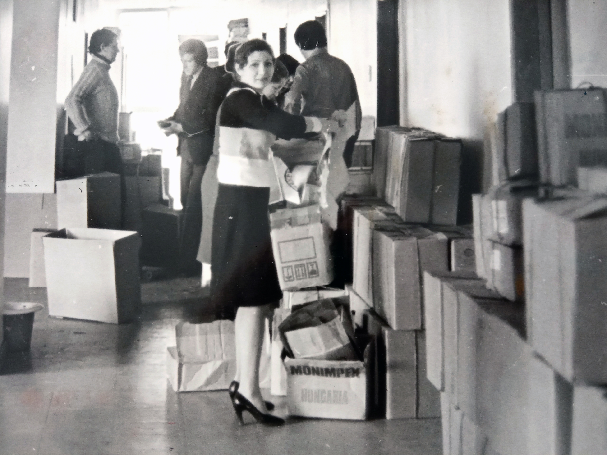
Участие приняли не только рядовые граждане. Не остались в стороне государственные и общественные деятели, организации и ведомства. Свои книги прислали выдающиеся советские писатели, художники, актеры, режиссеры, маршалы, генералы и другие. Все эти книги с автографами их дарителей вошли в «золотой фонд» библиотеки.
На протяжении нескольких месяцев, как и было обещано, на страницах журнала печатали имена дарителей книг, цитировали их письма.
Из воспоминаний главного редактора «Смены» Альберта Лиханова: «Нам, сменовцам, остаётся только низко в пояс поклониться всем, кто прислал свои книги для библиотеки. Все ваши книги, дорогие наши читатели, стоят на полках в нашей общей библиотеке, у самого Полярного круга! Дело сделано!»
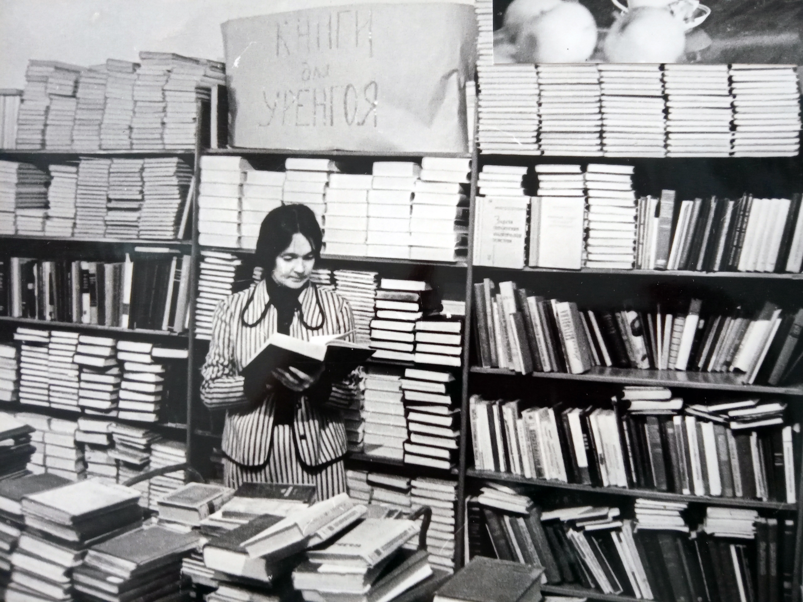
Одна из последних и при этом очень важных была проблема транспортировки здания на место. Но и она была успешно решена при поддержке генерального штаба Советской Армии. Для переброски деталей здания были выделены самолеты транспортной авиации военно-воздушных сил.
Монтаж и отделка здания, а также установка библиотечного оборудования были выполнены силами ударного отряда имени XVIII съезда ВЛКСМ.
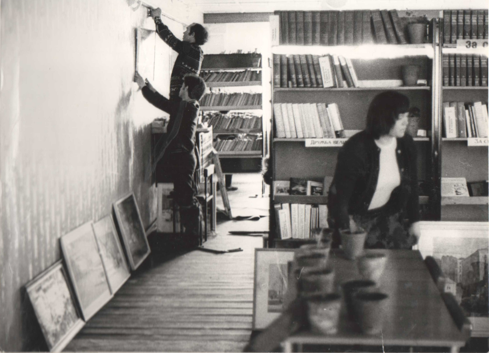
Торжественное открытие библиотеки состоялось 12 мая 1979 года. Событие было значимое как для поселка, так и для всей страны, активно принимавшей участие в судьбе библиотеки.
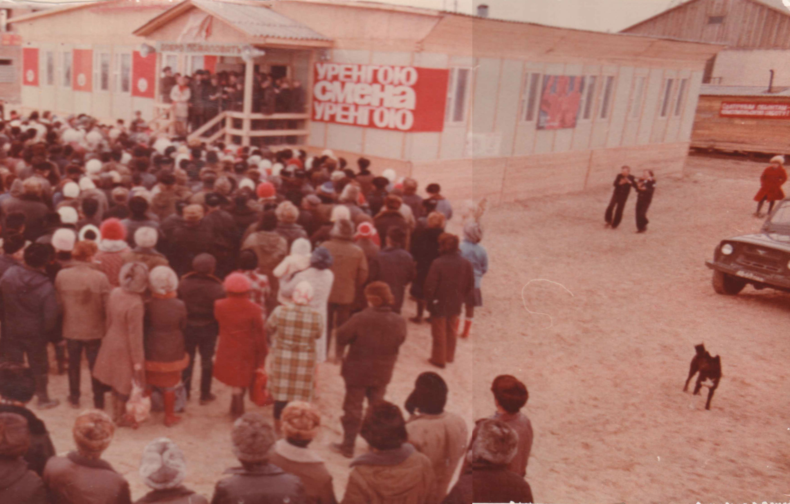
Поэтому на открытии присутствовало много известных людей: летчик-космонавт СССР, дважды Герой Советского Союза Виталий Севастьянов, трёхкратная чемпионка мира по конькам, первая советская чемпионка мира Мария Исакова, заслуженный штурман СССР, известный исследователь Арктики Валентин Аккуратов, поэтесса Людмила Щипахина, журналист-международник Андрей Левин, главный редактор молодёжного экспериментального объединения киностудии Мосфильм Кирилл Замошкин, кинорежиссёр Виталий Тарасенко, актриса Людмила Ларионова
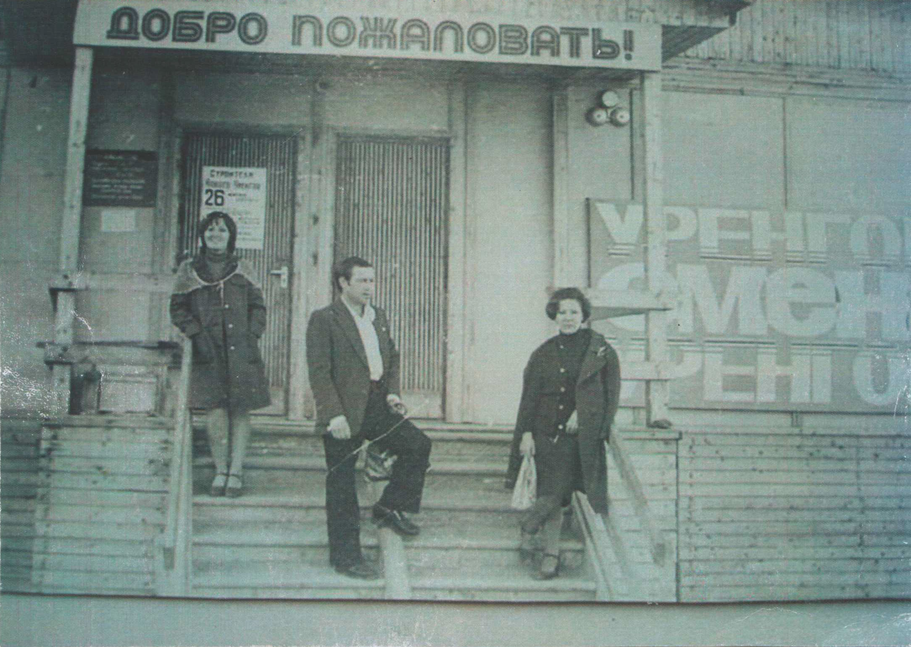
А вакантное место библиотекаря заняла Надежда Бендас, которая ранее работала в областных библиотеках Ивано-Франковска, Харькова и Тюмени. В ЦК ВЛКСМ ей была вручена комсомольская путёвка в Уренгой.
И конечно же в благодарность сотрудникам журнала «Смена» библиотека была названа его именем.
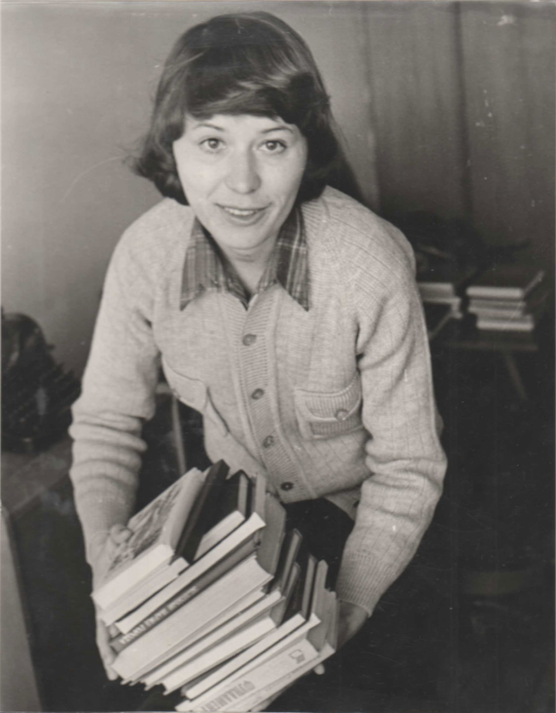
Из воспоминаний главного редактора «Смены» Альберта Лиханова: «Мы летели 11 мая спецрейсом почти через всю европейскую часть страны. Через Печору, над Северным Уралом, к Полярному кругу. Внизу, под нами, полыхала весна. Зелёные леса, поля, тронутые изумрудом озими. Даже в Печоре нас встретил разлив. Но когда мы подлетали к Уренгою, земля оказалась укутанной плотным снегом. Двенадцатого мая, в день открытия библиотеки температура была там минус 7 градусов, дул пронизывающий ветер, а в день отлёта автобусы, которые везли делегацию к аэродрому, застряли в снегу. Вот что такое Уренгой.»
Планировалось, что появившаяся библиотека станет не просто книгохранилищем, а культурным центром Нового Уренгоя. Поэтому вскоре при библиотеке было создано литературное объединение под руководством тюменского писателя Евгения Ананьева.
На базе библиотеки постоянно работала выставка краеведческой литературы. Также традиционно проводили книжные выставки, посвященные выдающимся деятелям литературы и искусства.
Однако у Нового Уренгоя была своя специфика: отдаленность многих производственных участков. Рабочие жили в вахтовых посёлках, в городе бывали редко. Для решения этого вопроса организовали десяток передвижных библиотек для рабочих с постоянно обновляющимся фондом.
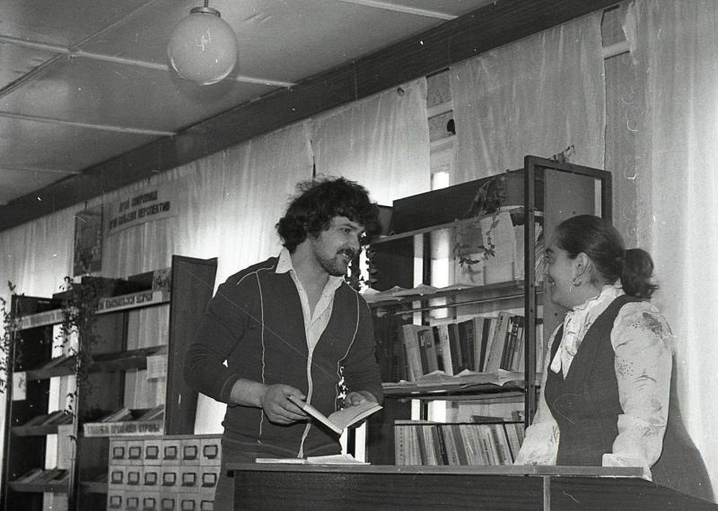
Взрослая библиотека стало неотъемлемой частью досуга жителей Нового Уренгоя. Казалось бы, задача решена. Но уже летом 1980 года в редакцию стали приходить письма с просьбой снова помочь: библиотеки не хватает.
Население к тому времени уже города начинает стремительно расти. В Новом Уренгое оказалось много студентов-заочников, которые по причине стесненных бытовых условий занимаются в читальном зале. Поэтому дети (а их тоже прибывает) остаются как бы на обочине.
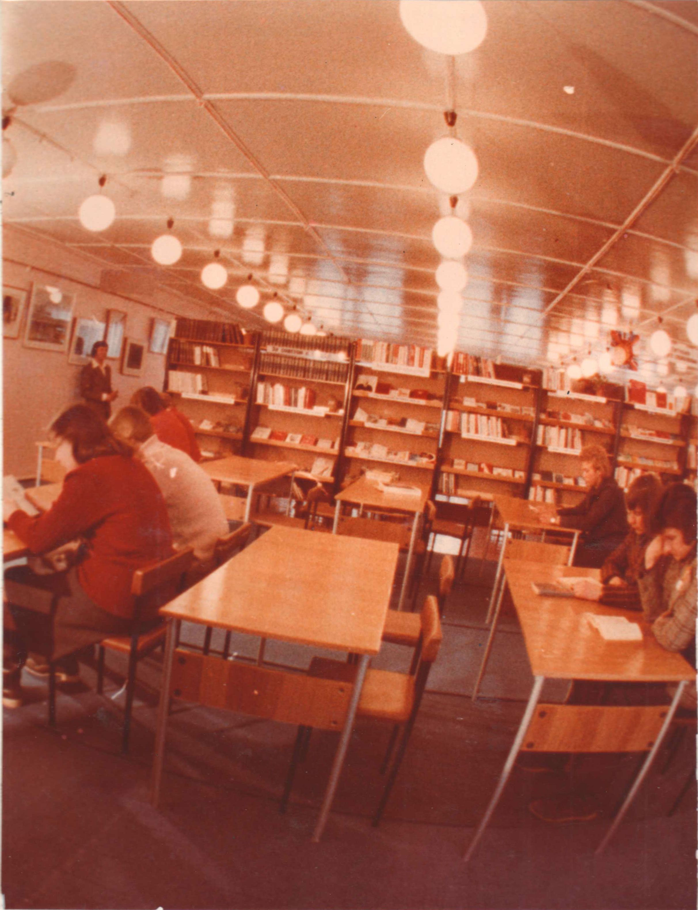
И тогда журнал «Смена» снова предлагает открыть библиотеку в Новом Уренгое, на этот раз детскую.
И опять все те же самые проблемы: отсутствие финансирования, здания, фондов. И решались они точно так же, опыт уже имелся. Поначалу были опасения снижения внимания к этой затее. Но они не оправдались. И меньше, чем за год, удалось подготовиться к открытию новой библиотеки.
Торжественное открытие детской библиотеки состоялось 15 февраля 1981 года. Право разрезать ленточку было предоставлено главному редактору журнала «Смена» Альберту Лиханову и ученице 5 класса средней школы №1 Иве Ловкой. Заведующая библиотекой В.С. Артюхова вручила первым читателям формуляры. Их получили учащиеся средней школы №1 Ирина Миронычева и Сергей Котляров.
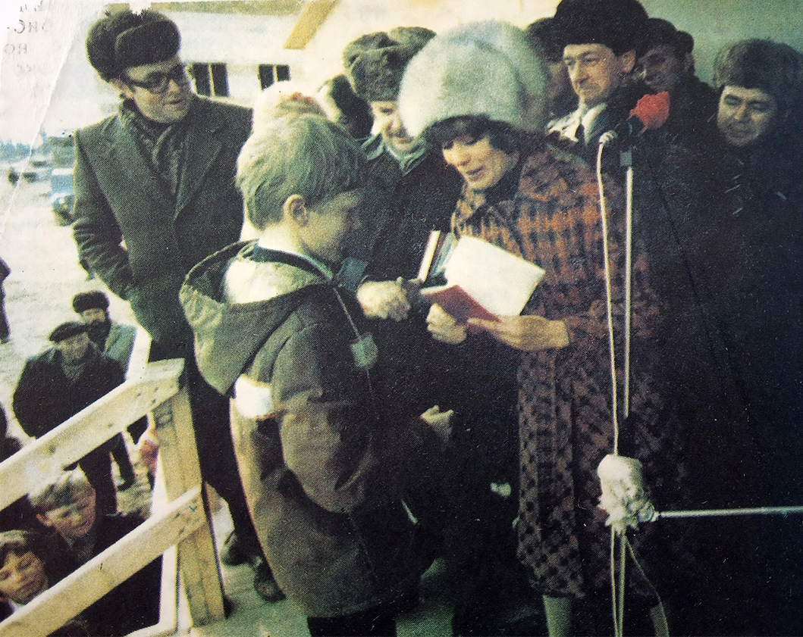
Сегодня в газовой столице 6 библиотек, которые объединены в централизованную библиотечную систему.
В 1990 году фонды взрослой библиотеки переехали в новое здание Центральной библиотеки (ул. Молодёжная 3А). Старое здание было демонтировано, потому что мешало стройке Виадука.
В 1993 году здание детской библиотеки также было демонтировано. Его основание было повреждено при строительстве фундамента дома №5 по пр. Губкина. За это время детская библиотека сменила несколько адресов (ул. Набережная 43Г, ул. Молодёжная 17Г, мкр. Оптимистов 3/2, мкр. Юбилейный 2/1). Сегодня библиотека располагается по адресу мкр. Оптимистов 4/3.
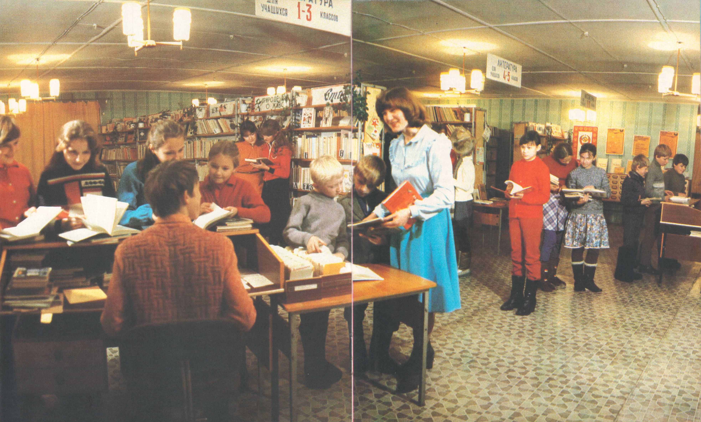
Библиотека бережно хранит свою историю. Альбом по истории библиотеки содержит уникальные фотографии, вырезки из газет и журналов тех лет, когда создавалась библиотека.
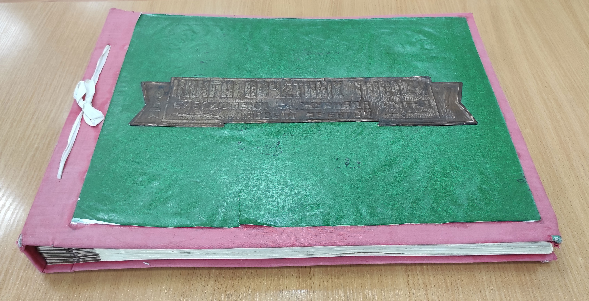
«Книга почетных гостей» ведется с 12 мая 1979 года. В ней оставили свои пожелания почетные гости и первые читатели библиотеки, участники юбилейных торжеств и различных мероприятий, проводимых в стенах библиотеки.
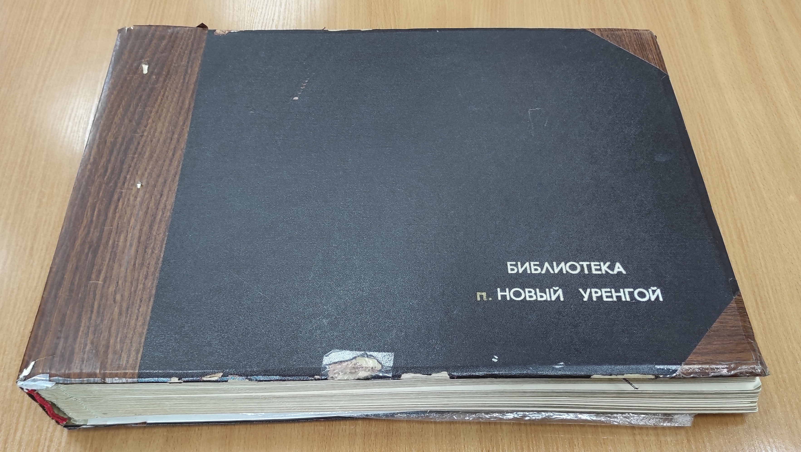
С миру по нитке – голому рубаха. Эта пословица как нельзя лучше описывает появление первой взрослой и первой детской библиотек в газовой столице. В конце 1970-х годов, когда Новый Уренгой рос не по дням, а по часам, в посёлке остро стояла проблема досуга трудящихся. И тогда самый массовый молодёжный журнал «Смена» в 1978 году предложил своим читателям общими силами открыть библиотеку в Новом Уренгое. Собирали книги «всей страной». Пионеры и пенсионеры, государственные и общественные деятели, организации и ведомства. Никто не остался в стороне. Шли посылки и бандероли, приходили письма и телеграммы. И уже 12 мая 1979 года состоялось торжественное открытие первой библиотеки. Но город рос так быстро, что вскоре её стало не хватать. Тогда история повторилась. Журнал «Смена» предложил открыть уже детскую библиотеку. Жители нашей необъятной страны снова поддержали инициативу. И уже 15 февраля 1981 года состоялось торжественное открытие детской библиотеки. Обеим библиотекам и улице между ними было присвоено имя журнала «Смена» в благодарность сотрудникам журнала.